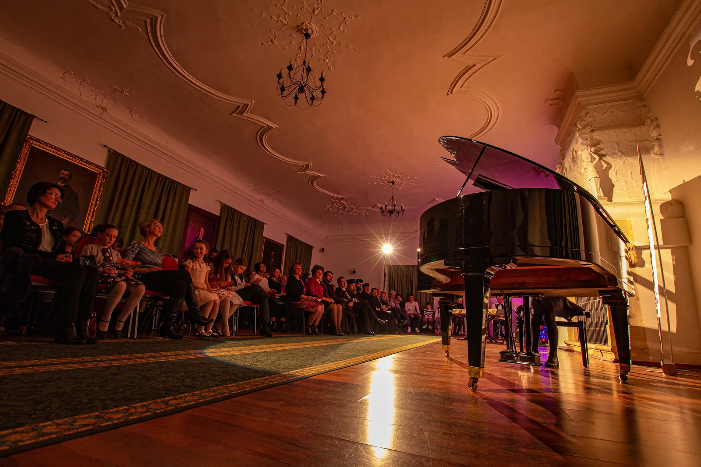
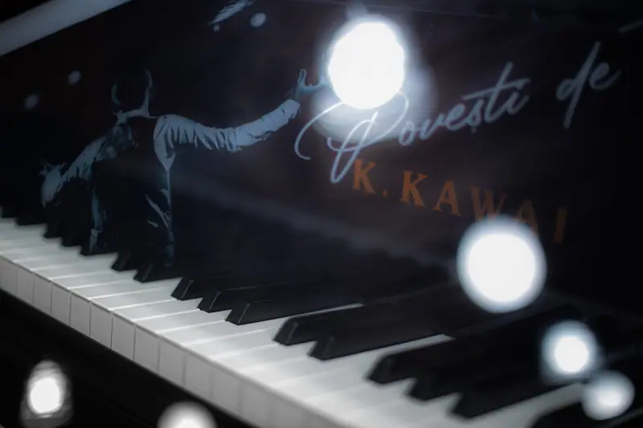

Am construit un pian, notă cu notă.
Totul a pornit de la un profesor de pian și de la întrebarea unei eleve, „Așa arată un pian?” Aurelian Epuraș, inițiatorul Fabricii de Pian și președintele asociației, a răspuns construind unul, concert după concert, pentru copiii și profesorii Secției de Muzică a Școlii „I. G. Duca”, alături de sute de oameni din Valea Jiului.
Am plănuit 36 de luni. Ne-au ajuns 12.
Pe 25 ianuarie 2019, planul suna aproape imposibil: câte un concert pe lună, timp de trei ani, pentru cei 36.000 de euro ai unui pian de concert. Comunitatea a umplut sălile atât de repede, încât restul calendarului a rămas gol. Golul acela e cea mai frumoasă parte a poveștii.

„Așa arată un pian?”
Acum 30 de ani, un mic elev aflat în fața unei pianine de studiu își întreba profesorul, pe domnul Ginel Petrescu: „Așa arată un pian?” Întors acasă după 13 ani de pian și predare în Franța, același elev, devenit profesor la aceeași școală, a primit aceeași întrebare de la o elevă cu bucle aurii, în prima ei oră de pian.
Știa că există doar fabrici de piane. Așa că, pe 25 ianuarie 2019, a deschis una care avea să facă unul singur.
Citește povestea întreagă →
Dacă nu avem un pian, îl vom construi.Aurelian Epuraș · inițiatorul Fabricii de Pian și președintele asociației
Ce am construit, piesă cu piesă.
Pianul de concert
Kawai GX-2 Grand, cumpărat exclusiv din concerte și donații.
Sala de concert
Renovată de la zero, proiectată voluntar de un fost elev, arhitectul Alexandru Pruteanu.
Studioul audio
În pandemie, concertele au mers mai departe, online.
Laboratorul de muzică
„Petru Barbăroșie”: refăcut de la zero, cu lumini, mobilier și echipamente noi.
Fiecare concert, o cărămidă.
Seară de seară, pentru elevii Secției de Muzică: Aurelian Epuraș la pian, alături de elevi, profesori, artiști invitați și publicul Văii Jiului.

Stagiunea Fabricii
Petroșani · Lupeni · Deva · 2019 – 2022


Susține Fabrica de Pian
Din puținul fiecăruia s-a făcut un lucru mare. Un pian, o sală, un studio și un laborator. Donațiile de acum țin în viață asociația și îi acoperă cheltuielile curente, ca Fabrica de Pian să meargă mai departe pentru copiii Văii Jiului.
Direcționează din impozit
Completezi formularul 230 către Asociația Fabrica de Pian. Banii vin din impozitul pe care oricum îl plătești. Nu te costă nimic.
Cum completezi formularul 230Donează direct
RO50 BTRL RONC RT04 8594 4701
Banca Transilvania · C.I.F. 40561657
Mențiunea „Donație Fabrica de Pian”.
Episcopia Devei și Hunedoarei · Teatrul Dramatic „Ion D. Sîrbu” · Primăria Municipiului Petroșani · Muzeul Civilizației Dacice și Romane Deva · Spitalul de Urgență Petroșani · Lions Club Via Regis · Comanderia nr. 32 Matei Corvin Petroșani · Klavier Art · Kapital TV · Ziarul Exclusiv · Cronica Văii Jiului · și sute de oameni cu suflet mare